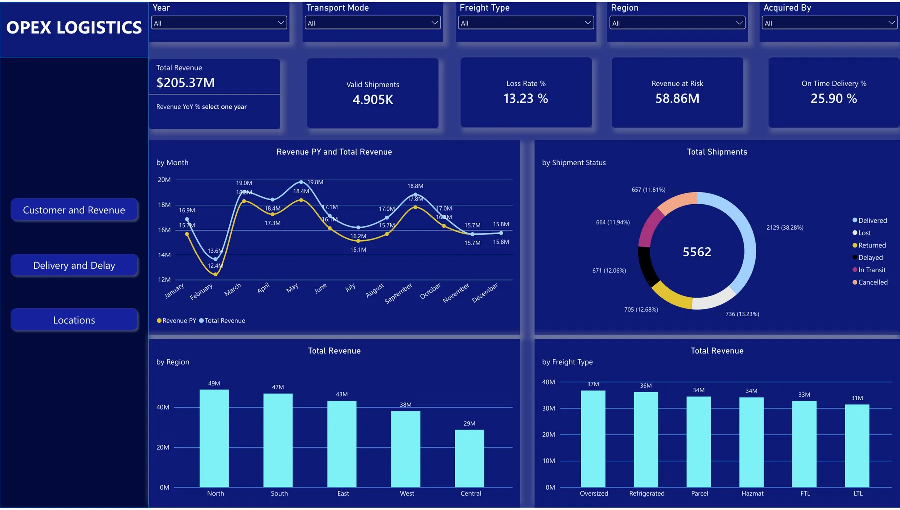
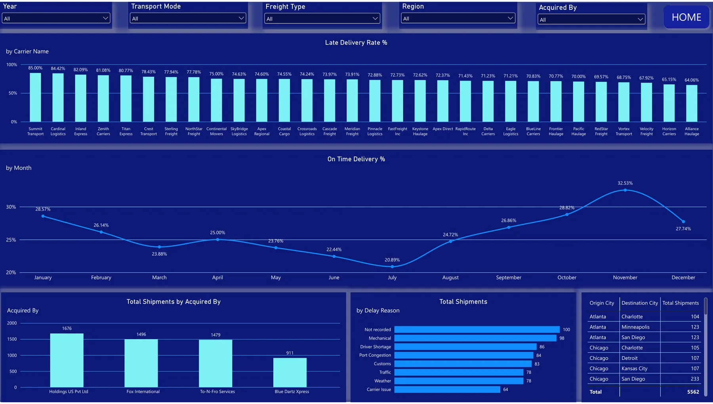
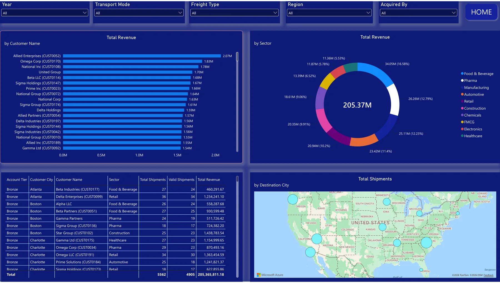
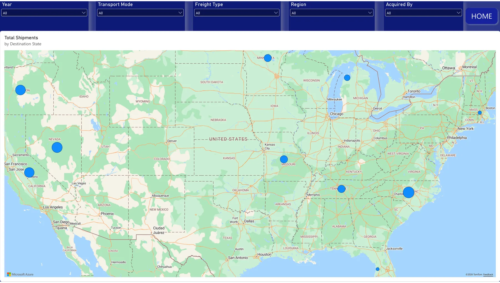

Analytics / Case study
Opex Logistics, carrier and shipment performance
A Power BI report for a freight network of 200 customers, 30 carriers and 50 routes, built on Microsoft Fabric from raw ERP extracts. Opex Logistics is a training case study with a synthetic dataset. The work was getting from eight messy CSV files to numbers I could defend, and most of this page is about what was wrong with the data and how I found it.
Every one of these matches the validation totals in the project brief. Before the cleanup they did not: the model was counting 5,611 shipments and $207.7M.
The service picture is the headline. About one delivered load in four arrives on time, and one shipment in eight is lost. Every carrier is late on most of its deliveries, from 64.1% of loads at the best carrier to 85.0% at the worst, so this is a network problem rather than one bad contract. Revenue is spread thin: the top ten customers bring in 8.4% of it, so no single account carries the business.
All four pages as exported from the Power BI service, with every slicer set to All. Click any page to open it full size.




I profiled every file in Python before trusting the model, then checked the model itself with DAX queries. These are the problems that changed a number on the report.
| Problem | What it did to the report | Fix |
|---|---|---|
| 50 shipments with a blank ID | Shipment count and revenue overstated against the brief | Removed duplicates on shipment ID in the dataflow, as the brief specifies |
| Route states that did not match the city: 46 of 50 destinations wrong, Charlotte listed in six different states | The shipment map plotted volume in the wrong states | Derived each state from its city in the dataflow |
| Customer states wrong for 182 of 200 customers | Any customer geography was unusable | Same city to state rule |
| 200 customer IDs sharing only 99 names | Revenue by customer merged up to six separate accounts into one bar | Added the customer ID to any name used more than once |
| The fuel surcharge key held the shipment date, not the month | Only 224 of 5,611 shipments found a fuel rate | Set the key to the first of the month; every shipment now matches except August to October 2026, where no rates exist |
| On time % and late % divided by different bases | The two did not add up to 100% | Both now use delivered shipments that have a delivery date |
| Year over year growth worked out across all years at once | A misleading +5.5% on the overview card | The card now only shows growth when a single year is selected |
| Late deliveries by carrier shown as a count | Busy carriers looked worst simply for being busy | Changed to a late rate; one carrier with almost the fewest late loads ranks among the six worst by rate |
| Placeholder weights of −1 and delayed loads with no reason | Weight totals off, delay causes undercounted | Weights set to blank, missing reasons labelled “Not recorded” |
Scroll the table sideways on a phone
Some problems are not fixable by cleaning, and the honest thing is to say so on the report rather than chart around them.
I checked the raw files and the published model separately. The files told me what the data should look like; the model told me what the report was actually doing with it. Two of the larger problems, the fuel key and the merged customer names, only showed up on the model side, because each file looked fine on its own.
Fixes live in the dataflow wherever possible, so they run on every refresh instead of being patched in a visual.